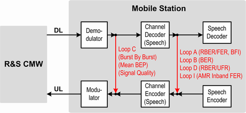

Test Loops
The MS test loops for conformance tests are specified in 3GPP TS 44.014. For BER CS measurements, the following test loops are relevant (see also next figure):
- Loop A:
Loop A is a TCH loop placed after the channel decoder, including signaling of erased frames.
Every good speech frame received by the MS is taken from the output of the channel decoder, put into the channel encoder and transmitted back to the instrument.
For received bad frames, only zeros are put into the channel encoder and transmitted back. Bad frames detected in the MS receiver are also called erased frames.
Loop A is required to determine the frame erasure ratio (FER) and the residual bit error ratio (RBER). - Loop B:
Loop B is a TCH loop placed after the channel decoder, without signaling of erased frames.
It loops back all speech frames, including bad frames. The content of a bad (erased) frame is taken from the channel decoder, put into the channel encoder and transmitted back to the instrument, marked as good speech frame.
Loop B is required to determine class Ib and class II bit error ratios. - Loop C:
Loop C is a burst by burst TCH loop placed after the demodulator. It bypasses the channel decoder and the following signal-processing stages in the MS. No CRC values are calculated and no CRC check is performed.
Loop C is required for burst by burst BER tests. - Loop D:
Loop D is a TCH loop for half-rate traffic channels (TCH/HR) placed after the channel decoder, including signaling of erased frames and unreliable frames.
Every good speech frame received by the MS is taken from the output of the channel decoder, put into the channel encoder and transmitted back to the instrument.
For received bad speech frame or an unreliable frame (BFI = 1 or UFI = 1) only zeros are put into the channel encoder and transmitted back. Bad frames detected in the MS receiver are declared as erased frames.
Loop D is required to determine the unreliable frame ratio (UFR) and the residual bit error ratio (RBER). - Loop I:
Loop I is a TCH loop placed after the channel decoder, without signaling of erased frames.
It loops back the decoded downlink inband signaling bits. The decoded downlink codec mode indication (CMI) is looped back as uplink codec mode request (CMR). The decoded downlink codec mode command (CMC) is sent back as uplink CMI.
Loop I is required to determine the frame error rate for inband signaling codewords.
The following figure provides an overview of the CS test loops. The measurement modes related to the test loops are indicated in brackets.

Loops for BER CS measurements